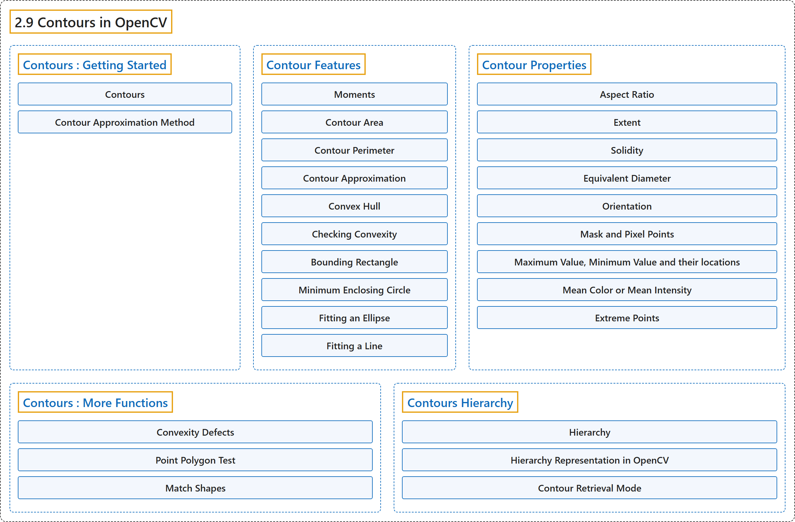

2.9 Contours in OpenCV
Classification

Glossary
| Term | Definition | 中文翻译 | Source |
|---|---|---|---|
| 2.9 Contours in OpenCV OpenCV 中的轮廓 |
(context) "All about Contours in OpenCV" | （语境）关于 OpenCV 中轮廓的一切 | OpenCV team, n.d.-g, "Image Processing in OpenCV", item 9 |
| Contours : Getting Started 轮廓入门 |
(context) "Learn to find and draw Contours" | （语境）学习寻找和绘制轮廓 | OpenCV team, n.d.-f, "Contours in OpenCV", item 1 |
| Contours 轮廓 |
"Contours can be explained simply as a curve joining all the continuous points (along the boundary), having same color or intensity." | 轮廓可以简单地解释为连接所有连续点（沿边界）、具有相同颜色或强度的曲线。 | OpenCV team, n.d.-c, "What are contours?", para. 1 |
| Contour Approximation Method 轮廓近似方法 |
(context) "But does it store all the coordinates ? That is specified by this contour approximation method." | （语境）但它会存储所有坐标吗？这由轮廓近似方法来指定。 | OpenCV team, n.d.-c, "Contour Approximation Method", para. 2 |
| Contour Features 轮廓特征 |
(context) "Learn to find different features of contours like area, perimeter, bounding rectangle etc." | （语境）学习求轮廓的各种特征，如面积、周长、外接矩形等。 | OpenCV team, n.d.-f, "Contours in OpenCV", item 2 |
| Moments 矩 |
"Image moments help you to calculate some features like center of mass of the object, area of the object etc." | 图像矩帮助你计算一些特征，如物体的质心、物体的面积等。 | OpenCV team, n.d.-a, "1. Moments", para. 1 |
| Contour Area 轮廓面积 |
(context) "Contour area is given by the function cv.contourArea() or from moments, M['m00']." | （语境）轮廓面积由函数 cv.contourArea() 给出，或者由矩 M['m00'] 得到。 | OpenCV team, n.d.-a, "2. Contour Area", para. 1 |
| Contour Perimeter 轮廓周长 |
"It is also called arc length." | 它也称为弧长。 | OpenCV team, n.d.-a, "3. Contour Perimeter", para. 1 |
| Contour Approximation 轮廓近似 |
"It approximates a contour shape to another shape with less number of vertices depending upon the precision we specify." | 它按照我们指定的精度，把一个轮廓形状近似为另一个顶点更少的形状。 | OpenCV team, n.d.-a, "4. Contour Approximation", para. 1 |
| Douglas-Peucker algorithm 道格拉斯-普克算法 |
(context) "It is an implementation of Douglas-Peucker algorithm." | （语境）它是道格拉斯-普克算法的一种实现。 | OpenCV team, n.d.-a, "4. Contour Approximation", para. 1 |
| Convex Hull 凸包 |
"Here, cv.convexHull() function checks a curve for convexity defects and corrects it." | 这里，cv.convexHull() 函数检查曲线的凸缺陷并加以修正。 | OpenCV team, n.d.-a, "5. Convex Hull", para. 1 |
| convex curves 凸曲线 |
"Generally speaking, convex curves are the curves which are always bulged out, or at-least flat." | 一般来说，凸曲线是始终向外凸出、或至少是平的曲线。 | OpenCV team, n.d.-a, "5. Convex Hull", para. 1 |
| convexity defects 凸缺陷 |
"And if it is bulged inside, it is called convexity defects." | 而如果它向内凹进，就称为凸缺陷。 | OpenCV team, n.d.-a, "5. Convex Hull", para. 1 |
| Checking Convexity 检查凸性 |
"There is a function to check if a curve is convex or not, cv.isContourConvex()." | 有一个函数可以检查曲线是否为凸：cv.isContourConvex()。 | OpenCV team, n.d.-a, "6. Checking Convexity", para. 1 |
| Bounding Rectangle 外接矩形 |
(context) "There are two types of bounding rectangles." | （语境）外接矩形有两种类型。 | OpenCV team, n.d.-a, "7. Bounding Rectangle", para. 1 |
| Straight Bounding Rectangle 直立外接矩形 |
"It is a straight rectangle, it doesn't consider the rotation of the object." | 它是一个直立的矩形，不考虑物体的旋转。 | OpenCV team, n.d.-a, "7.a. Straight Bounding Rectangle", para. 1 |
| Rotated Rectangle 旋转矩形 |
"Here, bounding rectangle is drawn with minimum area, so it considers the rotation also." | 这里，外接矩形按最小面积绘制，因此也考虑了旋转。 | OpenCV team, n.d.-a, "7.b. Rotated Rectangle", para. 1 |
| Minimum Enclosing Circle 最小外接圆 |
"It is a circle which completely covers the object with minimum area." | 它是以最小面积完全覆盖物体的圆。 | OpenCV team, n.d.-a, "8. Minimum Enclosing Circle", para. 1 |
| Fitting an Ellipse 拟合椭圆 |
(context) "Next one is to fit an ellipse to an object." | （语境）下一个是为物体拟合一个椭圆。 | OpenCV team, n.d.-a, "9. Fitting an Ellipse", para. 1 |
| Fitting a Line 拟合直线 |
(context) "Similarly we can fit a line to a set of points." | （语境）类似地，我们可以为一组点拟合一条直线。 | OpenCV team, n.d.-a, "10. Fitting a Line", para. 1 |
| Contour Properties 轮廓属性 |
(context) "Learn to find different properties of contours like Solidity, Mean Intensity etc." | （语境）学习求轮廓的各种属性，如实心度、平均强度等。 | OpenCV team, n.d.-f, "Contours in OpenCV", item 3 |
| Aspect Ratio 宽高比 |
"It is the ratio of width to height of bounding rect of the object." | 它是物体外接矩形的宽与高之比。 | OpenCV team, n.d.-b, "1. Aspect Ratio", para. 1 |
| Extent 范围比（Extent） |
"Extent is the ratio of contour area to bounding rectangle area." | Extent 是轮廓面积与外接矩形面积之比。 | OpenCV team, n.d.-b, "2. Extent", para. 1 |
| Solidity 实心度 |
"Solidity is the ratio of contour area to its convex hull area." | 实心度是轮廓面积与其凸包面积之比。 | OpenCV team, n.d.-b, "3. Solidity", para. 1 |
| Equivalent Diameter 等效直径 |
"Equivalent Diameter is the diameter of the circle whose area is same as the contour area." | 等效直径是面积与轮廓面积相同的圆的直径。 | OpenCV team, n.d.-b, "4. Equivalent Diameter", para. 1 |
| Orientation 方向 |
"Orientation is the angle at which object is directed." | 方向是物体所指向的角度。 | OpenCV team, n.d.-b, "5. Orientation", para. 1 |
| Mask and Pixel Points 掩模与像素点 |
(context) "In some cases, we may need all the points which comprises that object." | （语境）有些情况下，我们可能需要构成该物体的所有点。 | OpenCV team, n.d.-b, "6. Mask and Pixel Points", para. 1 |
| Maximum Value, Minimum Value and their locations 最大值、最小值及其位置 |
(context) "We can find these parameters using a mask image." | （语境）我们可以用掩模图像求出这些参数。 | OpenCV team, n.d.-b, "7. Maximum Value, Minimum Value and their locations", para. 1 |
| Mean Color or Mean Intensity 平均颜色或平均强度 |
"Here, we can find the average color of an object. Or it can be average intensity of the object in grayscale mode." | 这里可以求出物体的平均颜色。也可以是灰度模式下物体的平均强度。 | OpenCV team, n.d.-b, "8. Mean Color or Mean Intensity", para. 1 |
| Extreme Points 极点 |
"Extreme Points means topmost, bottommost, rightmost and leftmost points of the object." | 极点指物体最上、最下、最右和最左的点。 | OpenCV team, n.d.-b, "9. Extreme Points", para. 1 |
| Contours : More Functions 轮廓：更多函数 |
(context) "Learn to find convexity defects, pointPolygonTest, match different shapes etc." | （语境）学习求凸缺陷、使用 pointPolygonTest、匹配不同形状等。 | OpenCV team, n.d.-f, "Contours in OpenCV", item 4 |
| Convexity Defects 凸缺陷 |
"Any deviation of the object from this hull can be considered as convexity defect." | 物体对凸包的任何偏离都可以看作凸缺陷。 | OpenCV team, n.d.-d, "1. Convexity Defects", para. 1 |
| Point Polygon Test 点与多边形测试 |
"This function finds the shortest distance between a point in the image and a contour." | 这个函数求图像中一个点到轮廓的最短距离。 | OpenCV team, n.d.-d, "2. Point Polygon Test", para. 1 |
| Match Shapes 形状匹配 |
"OpenCV comes with a function cv.matchShapes() which enables us to compare two shapes, or two contours and returns a metric showing the similarity." | OpenCV 提供函数 cv.matchShapes()，它让我们比较两个形状或两个轮廓，并返回一个表示相似度的度量。 | OpenCV team, n.d.-d, "3. Match Shapes", para. 1 |
| Hu-Moments Hu 矩 |
"Hu-Moments are seven moments invariant to translation, rotation and scale." | Hu 矩是对平移、旋转和缩放保持不变的七个矩。 | OpenCV team, n.d.-d, "3. Match Shapes", Note |
| Contours Hierarchy 轮廓层级 |
(context) "Learn about Contour Hierarchy" | （语境）学习轮廓层级 | OpenCV team, n.d.-f, "Contours in OpenCV", item 5 |
| Hierarchy 层级 |
"Representation of this relationship is called the Hierarchy." | 这种关系的表示称为层级。 | OpenCV team, n.d.-e, "What is Hierarchy?", para. 1 |
| parent 父轮廓 |
"In this case, we call outer one as parent and inner one as child." | 这种情况下，我们把外面的称为父轮廓，里面的称为子轮廓。 | OpenCV team, n.d.-e, "What is Hierarchy?", para. 1 |
| child 子轮廓 |
"In this case, we call outer one as parent and inner one as child." | 这种情况下，我们把外面的称为父轮廓，里面的称为子轮廓。 | OpenCV team, n.d.-e, "What is Hierarchy?", para. 1 |
| external or outermost 外部轮廓（最外层） |
(context) "Here, contours 0,1,2 are external or outermost." | （语境）这里，轮廓 0、1、2 是外部的或最外层的。 | OpenCV team, n.d.-e, "What is Hierarchy?", para. 4 |
| same hierarchy level 同一层级 |
(context) "We can say, they are in hierarchy-0 or simply they are in same hierarchy level." | （语境）可以说它们处于 hierarchy-0，或者简单地说处于同一层级。 | OpenCV team, n.d.-e, "What is Hierarchy?", para. 4 |
| first child 第一个子轮廓 |
(context) "From the way I numbered the boxes, I would say contour-4 is the first child of contour-3a (It can be contour-5 also)." | （语境）按照我给方框编号的方式，我会说轮廓 4 是轮廓 3a 的第一个子轮廓（也可以是轮廓 5）。 | OpenCV team, n.d.-e, "What is Hierarchy?", para. 5 |
| Hierarchy Representation in OpenCV OpenCV 中的层级表示 |
"OpenCV represents it as an array of four values : [Next, Previous, First_Child, Parent]" | OpenCV 把它表示为由四个值组成的数组：[Next, Previous, First_Child, Parent] | OpenCV team, n.d.-e, "Hierarchy Representation in OpenCV", para. 1 |
| Next 下一个（Next） |
"Next denotes next contour at the same hierarchical level." | Next 表示同一层级上的下一个轮廓。 | OpenCV team, n.d.-e, "Hierarchy Representation in OpenCV", para. 2 |
| Previous 上一个（Previous） |
"Previous denotes previous contour at the same hierarchical level." | Previous 表示同一层级上的上一个轮廓。 | OpenCV team, n.d.-e, "Hierarchy Representation in OpenCV", para. 5 |
| First_Child 第一个子轮廓（First_Child） |
"First_Child denotes its first child contour." | First_Child 表示它的第一个子轮廓。 | OpenCV team, n.d.-e, "Hierarchy Representation in OpenCV", para. 7 |
| Parent 父轮廓（Parent） |
"Parent denotes index of its parent contour." | Parent 表示其父轮廓的索引。 | OpenCV team, n.d.-e, "Hierarchy Representation in OpenCV", para. 9 |
| Contour Retrieval Mode 轮廓检索模式 |
(context) "But when we found the contours in image using cv.findContours() function, we have passed an argument, Contour Retrieval Mode." | （语境）但用 cv.findContours() 函数在图像中寻找轮廓时，我们传入了一个参数：轮廓检索模式。 | OpenCV team, n.d.-e, "Theory", para. 1 |
References
OpenCV team. (n.d.-a). Contour Features. OpenCV-Python Tutorials (Version 4.13.0). Retrieved October 31, 2026, from https://docs.opencv.org/4.x/dd/d49/tutorial_py_contour_features.html
OpenCV team. (n.d.-b). Contour Properties. OpenCV-Python Tutorials (Version 4.13.0). Retrieved October 31, 2026, from https://docs.opencv.org/4.x/d1/d32/tutorial_py_contour_properties.html
OpenCV team. (n.d.-c). Contours : Getting Started. OpenCV-Python Tutorials (Version 4.13.0). Retrieved October 31, 2026, from https://docs.opencv.org/4.x/d4/d73/tutorial_py_contours_begin.html
OpenCV team. (n.d.-d). Contours : More Functions. OpenCV-Python Tutorials (Version 4.13.0). Retrieved October 31, 2026, from https://docs.opencv.org/4.x/d5/d45/tutorial_py_contours_more_functions.html
OpenCV team. (n.d.-e). Contours Hierarchy. OpenCV-Python Tutorials (Version 4.13.0). Retrieved October 31, 2026, from https://docs.opencv.org/4.x/d9/d8b/tutorial_py_contours_hierarchy.html
OpenCV team. (n.d.-f). Contours in OpenCV. OpenCV-Python Tutorials (Version 4.13.0). Retrieved October 31, 2026, from https://docs.opencv.org/4.x/d3/d05/tutorial_py_table_of_contents_contours.html
OpenCV team. (n.d.-g). Image Processing in OpenCV. OpenCV-Python Tutorials (Version 4.13.0). Retrieved October 31, 2026, from https://docs.opencv.org/4.x/d2/d96/tutorial_py_table_of_contents_imgproc.html